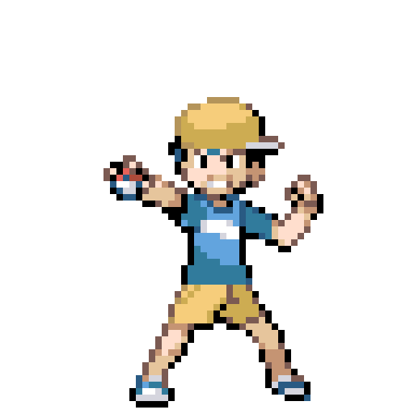
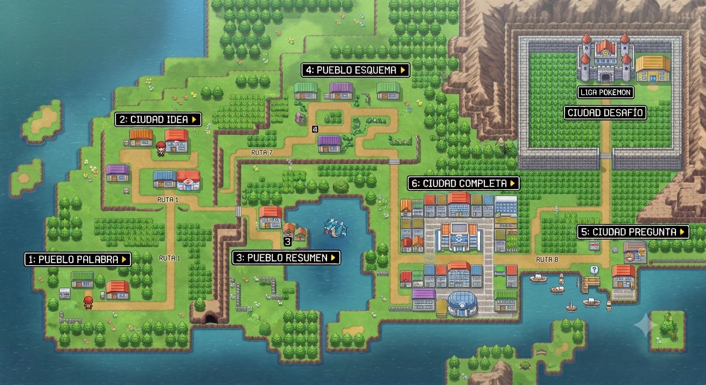
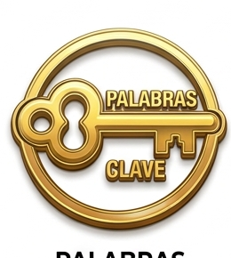
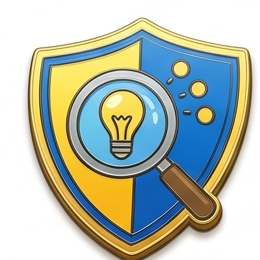
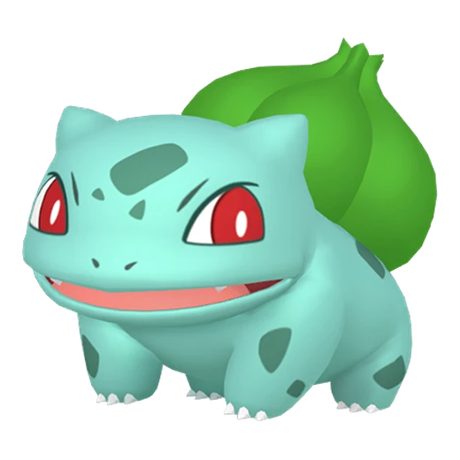

Reto: encontrar palabras clave · preguntas aleatorias



Izam ya domina el primer paso: localizar lo importante sin copiar todo.

Ruta 1 → Gimnasio 2 · Ciudad Idea
Ahora: Pueblo Palabra · Palabras clave. Después seguiremos por la Ruta 1 hacia Ciudad Idea.

Pokémon inicial: —
Medallas conseguidas: